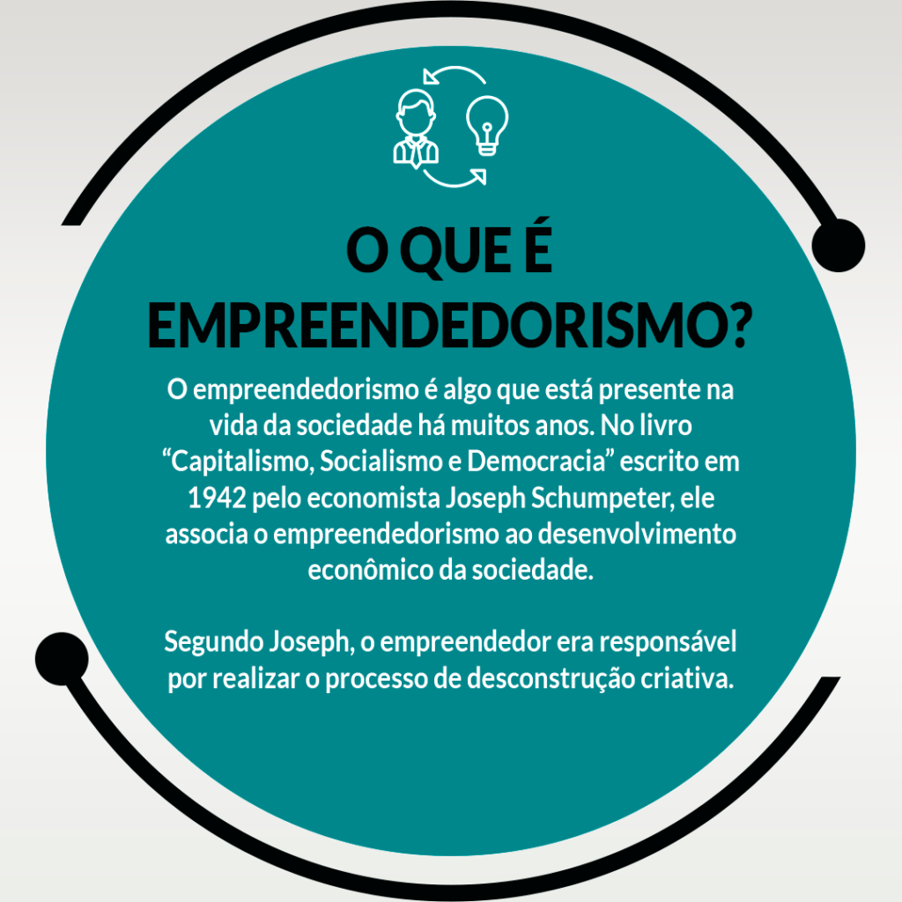

Regando Oportunidades
Objetivo: Identificar oportunidades em meio de problemas, desenvolvendo uma renda extra.
Ademais, este projeto está voltado para agricultura familiar, dado que, é nas pequenas propriedades que tantas pessoas buscam o sustento de suas famílias. Diante disso, o empreendedorismo se torna crucial para diversas familias rurais que procuram uma renda extra. Um ramo comum e conhecido é na parte de alimentação, englobando geleias de frutas, queijos, polpas de frutas, entre outras.
Desafio: Encontrar alguma ideia e começar o seu próprio empreendimento..